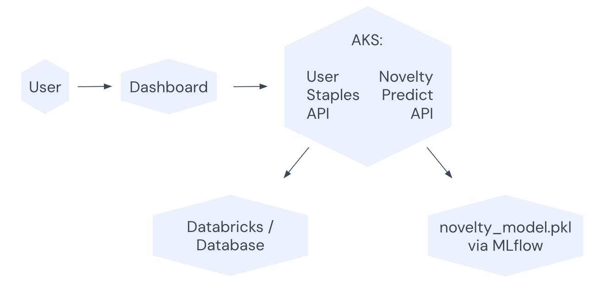

Introduction & Background
Our project predicts when users are most likely to purchase items outside their regular staples, using time-based features like hour and weekday. This helps retailers identify high-profit moments driven by novelty behavior. We use user-level purchase history to define staple items and train a classification model to detect deviations. One team member handled the data pipeline, microservice deployment, and infrastructure setup. The other focused on model development, evaluation, and dashboard creation.
Technology Stack
We used Docker for containerization, Databricks for scalable data processing and model training, Spark ML for feature engineering, and AKS for microservice deployment. MLflow was used for model tracking and deployment. These tools were chosen for their compatibility with large datasets, ease of integration, and support for end-to-end machine learning workflows.
Microservices & Architecture
We built two microservices: the User Staples API and the Novelty Predict API. The User Staples API identifies staple items for each user based on purchase frequency. The Novelty Predict API uses these staples along with time-based features to predict the likelihood of a novelty item purchase. Both services are containerized with Docker and deployed on AKS. Below is a simplified architecture diagram:
Dataset & ETL
We used the Ecommerce Dataset for Predictive Marketing 2023 from Kaggle. This dataset contains user-level purchase history suitable for modeling staple and novelty behavior.
We processed the data in Databricks using PySpark. The ETL pipeline extracted each user’s staple items and labeled novelty purchases. Cleaned data was stored in Delta Tables for efficient access during model training and API integration.
ML Model
We used a Random Forest Classifier to predict whether a given order contains a novelty item based on the hour and weekday. This model was chosen for its ability to handle nonlinear feature interactions and imbalanced classes with minimal preprocessing. It was trained in Databricks using labeled data that identified staple and non-staple purchases per user.
The model achieved an Accuracy reading of 0.66, AUC of 0.62, and an F1-score of 0.77. It was logged and versioned using MLflow, then deployed as a REST API with FastAPI and Docker. The API was containerized and deployed to AKS for scalability and integration with other services.
REST APIs & Security
We built two microservices: the User Staples API and the Novelty Predict API. The User Staples API identifies staple items for each user based on purchase frequency. The Novelty Predict API uses these staples along with time-based features to predict the likelihood of a novelty item purchase. Both services are containerized with Docker and deployed on AKS. The architecture includes internal communication between the two services. The main endpoints are:
GET /user-staples: Returns staple itemsPOST /predict-novelty-time: Returns the probability of a novelty purchase given user ID, hour, and day of week
Security includes basic JWT validation, error logging, and retry logic using Python’s requests library.
Dashboard & Monitoring
Our real-time dashboard, built with Streamlit and connected to Databricks, visualizes key metrics such as novelty purchase probabilities, distribution of staple vs. non-staple items, and prediction trends by hour and weekday. Screenshots of the dashboard are shown below.
The dashboard highlights low-confidence predictions, system latency, and API response rates. Alerts are triggered when latency exceeds a set threshold or when prediction confidence drops below 60%, allowing for faster debugging and model performance monitoring.

GenAI Tool Reflection
We used ChatGPT to assist with code creation and understanding new concepts related to APIs, machine learning, and deployment. It was especially useful for quickly generating boilerplate code, explaining unfamiliar tools, and refining our architecture.
We also used Databricks’ built-in AI assistant to debug code directly within notebooks. This helped resolve Spark errors and streamline the ETL process. While both tools accelerated development, we still verified all outputs manually to ensure reliability in production.
Unified UI
Our UI provides a seamless user flow from login to prediction insights. Below are screenshots of key steps: